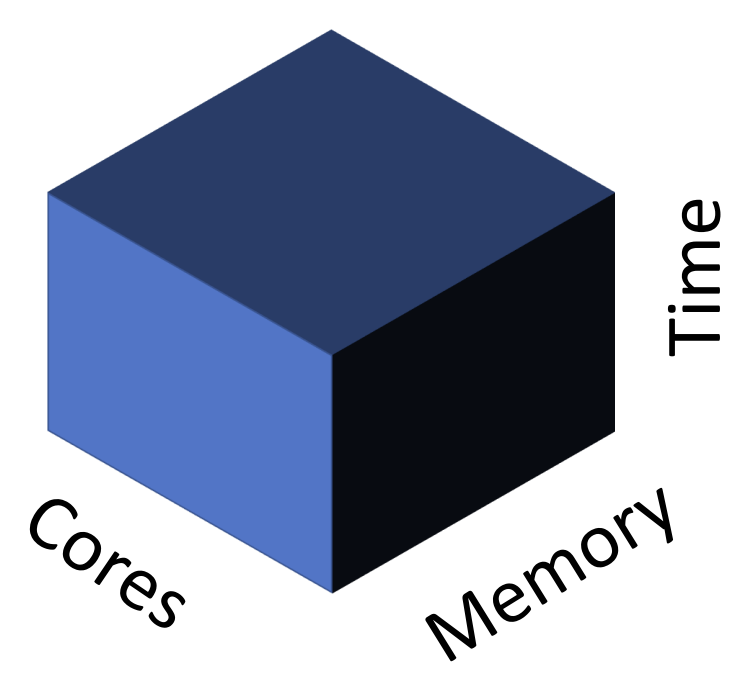

Using MSU’s Tempest Cluster
Up until now, each of you has been working on a different computer—your own. These differences include operating system (Mac vs. Windows vs. Linux), RAM, available storage capacity, number of CPUs, and preinstalled software. We’ve likely already run into problems because of this diversity: Different software versions use different commands, or have different security levels, for instance. As fun as troubleshooting has been, the remainder of the class will go much smoother if we only have to face installation and execution issues once—as a group. We will also be running software that requires RAM and computational resources far beyond what the typical student laptop can provide. For this reason, the goal of today’s lab is to become acquainted with the basics of MSU’s high-powered computing (HPC) cluster, Tempest.
As you will recall from your reading and discussion, Tempest is run by MSU’s Research Cyberinfrastructure group. The largest supercomputer in Montana, it provides researchers with an exceptionally powerful set of computational resources. Some of you may already have accounts on Tempest under your PI, who at minimum is able to access 256 CPUs, 1024GB of memory, and 2 GPUs (of which up to 1 can be an A100 GPU). These terms may still be unfamiliar, so let’s review them. Traditionally, a CPU (or central processing unit) was considered the basic unit of computing, capable of handling one operation at a time. However, this language is a holdover of an era where all CPUs were what is described as single-core, i.e., a single processor. Modern CPUs may have multiple cores: My laptop, for instance, has 8 cores within its CPU. Regardless, CPUs in a cluster are located on nodes, which you can think of as a standalone computer—i.e., something with its own storage and memory and one or CPUs—albeit one with more firepower than any personal machine. In an HPC, nodes are connected to each other over a network. Memory is what holds running programs and all their data. A GPU (which is beyond the scope of this class) is a special kind of super-fast processor that speeds things up by running jobs in parallel (i.e., at the same time).
Each PI account on Tempest has its own partition. To understand this concept, it is helpful to consider a 3D abstraction of computation resources provided by RCI:

Tempest is far more powerful than most of us will ever need. Yet it is still finite, and thus must balance simultaneous requests for resources among users. Partitions are part of its solution to this dilemma: on-demand memory, storage, and runtime for each lab. Within each lab, however, different accounts may compete for available CPUs and RAM, requiring a way to schedule tasks. (More on that below.) For now, it is sufficient to know that you will be accessing either your PI’s partition (if you’ve previously requested access) or the special partition set up for this class.
Logging in
One of the many perks of Tempest is its web-based graphical user interface (GUI), which provides a familiar point-and-click environment to run programs like RStudio or Jupyter Notebooks. I am sorry to say that we will be completely ignoring Tempest Web in favor of its command-line-based version. This is not simply my rigid aesthetic preference. All or nearly all of the programs we will run are command-line only, and so navigating the HPC the old-fashioned way is a prerequisite to competence. We start by learning how to log onto the HPC via ssh (something known as a secure shell protocol). First, however, you’ll need to ensure you are connected to MSU’s VPN. Hopefully you had time to install this before class and give it a test run—clicking “Connect” will prompt login via NetID, followed by required two-factor authentication (2FA). Go ahead and connect to the VPN now. Assuming you are successful, the next step is to open up your terminal and enter the following command (replacing <net_id> with your own Net ID, of course):
ssh <net_id>@tempest-login.msu.montana.eduHaving done so, you should see your terminal interface change to reflect the following new file system:
[<net_id>@tempest-login ~]$This means you have successfully logged on to Tempest, and are now navigating a (virtual) computer on the HPC known as the “Login Node”. Type pwd. You should see a path reflecting either your PI’s account (/home/<net_id>) or an account linked to this class. Take a minute to navigate around and familiarize yourself with the files structure of the HPC and its contents using familiar commands (ls, cd). Note the directory bioe-591-genomics/ with its subdirectories students/ and course-materials/. In students/, make a new directory with your name (mkdir name). This can be a pre-submission home for the scripts and data used in this class moving forward.
Different HPCs allow different tiers of users different permissions, often as a way of preventing command-line accidents, e.g. typing the wrong bash one-liner and overwriting something important to the overall function of the machine. Regardless, you should assume that anything you type on the cluster has the potential to do unintended harm, and double-check it carefuly. In particular, apply rm combined with wildcards like * with extreme caution. Consider the consequences of accidentally deleting another user’s dissertation analysis or data. You’d likely skip the country at the very least; becoming a monastic and renouncing all earthly pleasures is a distinct possibility.
Transferring Files
Now that you are on Tempest, a natural question is how you might transfer the files and scripts you need for your own research onto the cluster. MSU’s answer—typical of research HPCs across the country—is Globus. Globus is what is known as a data transfer client, meaning an application allowing rapid movement of large files among secured locations in a network. You may be excited to learn that it has a GUI, and that unlike the GUI for Tempest, we will be taking advantage of it. You should also be broadly familiar with the purpose and use of Globus from your reading earlier this week. Ideally you’ve already installed Globus Connect Personal, too. If not, go ahead and do so now. Instructions for Mac and Windows are available here. Once downloaded and installed, you’ll need to open the app, grant it appropriate permissions, log in with institutional information, your Net ID, and password. The next step will be to establish a “Collection” on your laptop. This is simply Globus’ term for connecting to the broader Globus network in a way that will allow you to transfer data across different computers. Name your collection and exit set up after ensuring
Next, return to your browser and navigate to the Globus Web interface. Click “LOG IN”, select “Montana State University - Bozeman”, and follow the prompts for your Net ID and 2FA. You should see a page similar to the following:
 These two panes show the file structures of two different nodes in the Globus network. In this class, this will always be Tempest and your own computer, but you may find yourself accessing MSU’s long-term storage solution (Blackmore) as well. To start, click on the left-hand pane and type “montana#tempest” (this may or may not autopopulate) and click “Search”. You should see a box with that name and three green tiles on the left-hand side pop up. Click this, and let it load. Assuming all is functioning, you will be rewarded with a visual view of the directories you previously navigated by the command line.
These two panes show the file structures of two different nodes in the Globus network. In this class, this will always be Tempest and your own computer, but you may find yourself accessing MSU’s long-term storage solution (Blackmore) as well. To start, click on the left-hand pane and type “montana#tempest” (this may or may not autopopulate) and click “Search”. You should see a box with that name and three green tiles on the left-hand side pop up. Click this, and let it load. Assuming all is functioning, you will be rewarded with a visual view of the directories you previously navigated by the command line.
Next, click on the right-hand pane. Search for the name of the collection on your laptop, or alternatively, click the “Your Collections” tab, where it may already be listed. In either case, double-click it once it appears, and you should see your own local file structure appear.
You are now ready to transfer your first file from your computer to Globus. For now, any plain text file will do; recall that if you would quickly create one with minimal contents, you may do so from the command line with (e.g.) the following commands:
touch globus_test.txt;
echo "test" > globus_test.txtOn the left-hand side of Globus’ web interface, navigate to the students/ subdirectory of bioe-591-genomics, and from there to your own personal subdirectory. Click anywhere on the right-hand side of Globus, and navigate whatever directory contains the file you wish to transfer to Tempest. Select it, and click “Start”. A message should appear indicating you’ve begun the file transfer process; depending on the configuration of your devices, you may also recieve email notifications to this effect and confirming the eventual successful transfer. For a miniscule plain text file, this will be very fast—within a minute, the file should be visible in the Tempest portion of the browser. For larger files, this can take minutes to hours, but is nonetheless faster and more secure than common alternatives.
Managing Environments with Mamba
A significant challenge in successfully running software from the command line is properly installing software and its dependencies (other software packages a given program relies upon to run). Manually loading each and every program required for a particular analysis is both tedious and error-prone, as mutual compatibility is often predicated on the particular version of a tool. If you’ve ever loaded a complex R package using CRAN and the install.packages() function, you’ve seen one solution to this problem. For many other types of software—particularly command-line tools and Python versions—an “environment manager” called Mamba is widely used.
First, a little history. Mamba (documentation here) is the less-bloated, faster equivalent of another environment manager called Anaconda (or Conda; documentation here). Its commands are equivalent, so any software that provides command-line instructions for installing it via Conda can be loaded in the same way. This will make more sense once you see it in practice; for now, the important thing is to recognize Mamba as the primary way we will install bioinformatics and genomics tools on the cluster.
Of course, Mamba is itself a program that must be installed. Luckily, Research Cyberinfrastructure has done so for us already. To access Mamba from the class Tempest partition (or your PIs), we will use a command-line tool called module. “Modules”—themselves a solution to the challenges of software installation—modify your path and configure your shell to allow you to run software that is installed at a higher level elsewhere on a computer or HPC. The details of this are outside our purview, but for now, recognize that running an application requires directing your computer to its location the way you would a standalone script (e.g., bash /user/you/homework/script.sh), and that your “environment” (the conditions of your user account) can be modified to avoid the need for absolute paths (e.g., they provide the ability to instead run bash script.sh from anywhere on the cluster when logged in).
Several commands are helpful for working with modules: module avail will produce a LONG list of all modules loaded by RCI, while module search <name_of_module> can winnow this down to packages of interest. Feel free to try these; you may need to type q to exit their output once you’ve finished scrolling (with the arrow keys). Next, enter the following commands:
module load Mamba/23.11.0-0;
mambaThis will load the newest version of Mamba on your account, and print a set of instructions describing how the program is used to your screen. To further confirm the module you have loaded is the one you intended, you can type module list, which should spit back Mamba/23.11.0-0. Before we go further, it can be useful to know how to backtrack, i.e. clean your environment of modules to load something new (or a different version of the same thing). You can do so simply with module unload <package>, e.g. module unload Mamba/23.11.0-0 in the current case. (You may have noticed that typing the first few characters of a module name and pressing tab on your keyboard will authopopulate your screen with all possibilites that match that string up until that point. This can be useful for quickly showing versions——typing module load Mamba + tab after unloading Mamba/23.11.0-0 will print two alternatives. For now, stick with the most recent.)
You might think we are now ready to use Mamba itself. Unfortunately, there is one more cryptic step. Enter the following command into your terminal:
eval "$(conda shell.bash hook)"In doing so, you will manipulate an environmental variable (something that only exists in the RAM of a particular shell / Terminal window / job) called $PATH. Your $PATH provides a list of directories that contain versions of software, allowing you to run them from the command line without their absolute paths. “But wait!”, I can hear you asking already. “Isn’t this what module load does?”. Yes, to an extent. However, unlike simpler programs, certain environment managers (the programs Conda and Mamba among them) need the ability to manipulate your shell itself (the *nix interface of the Terminal when accessing the HPC). The command above gives them this ability, albeit only once a session. (If this feels like magic, that’s fine. Once you’ve entered the command above, you can forget it until you need it again.)
Confirm the command has taken effect by printing your $PATH to the screen:
echo $PATH(As long as paths with mamba or conda are visible in the toutput, it is likely working as intended.)
Though it can facilitate multiple workflows, Mamba is arguably best used by creating named environments containing particular versions of software that can be loaded and unloaded as needed. To demonstrate its utility, we’ll work with a simple, efficient commandline tool called Seqtk. Seqtk is useful for converting sequence data between common formats, reporting summary statistics, merging files, and other basic operations. We will install Seqtk in its own environment, which we will create and give a unique name (“demo):
mamba env create --name demo -c bioconda seqtkHere, create initializes a new environment, the --name argument sets the name of the evnironment, -c tells the program to look for the software on an archive called Bioconda, and seqtk is the name of the software. If you wished to install multiple software packages into the demo environment, you could add additional names after seqtk as needed. However, you would first need to confirm they are available via Conda / Mamba—something easily done by googling “Mamba
You will be prompted to confirm the full set of dependencies and programs necessary to run seqtk. Type Y. The installation should finish, providing instructions for how to activate the environment. Ignore these for now. Type mamba env list. You should see demo and base appear, the latter referring to Mamba’s default state.
Confusingly, we will activate this environment using a conda command, something that is an artifact of the Mamba version available via RCI module.
conda activate demoYou should see (base) on the left-hand side of your terminal change to (demo). Verify you have loaded the proper environment by typing seqtk. If all has gone well, you should see a list of commands and their uses.
At this point, and at the risk of hopelessly confusing you, I am going to show you a second, preferable way to create environments. Let’s clean up by deactivating the current environment and then deleting it:
conda deactivate;
mamba env remove -n demoWe go about replacing it using a recipe encoded in something called a .yaml (or .yml) file, which are simply plain text files containing an easily interpreted language with information on software configurations and versions. This format pops up repeatedly (at the start of .Rmarkdown documents, for instance), so it is worth recognizing, even if it doesn’t deserve much thought. Create a file named demo_new.yml, and paste the following code into it using nano or another text editor:
name: demo_new
channels:
- conda-forge
- bioconda
dependencies:
- seqtkThis file provides detailed information to Mamba on exactly how to create a new environment. It is thus advantageous for any situation where you want your work to be reproduced with minimal hassle: running an analysis on a more powerful computer, sharing a pipeline with colleagues, or providing reviewers everything they need to generate the same results from your study. (The alternative—saving the long, one-off commands used to create environments in some sort of document—becomes cumbersome when multiple software packages are required, and is more prone to errors when used by others with different shell configurations.)
We can create (or recreate) a mamba environment using this file with the following command:
mamba env create -f demo_new.ymlAs before, activate the environment and confirm Seqtk is available to you:
conda activate demo_new
seqtkScheduling Jobs with Slurm
The last thing we will cover as part of our introduction to using Tempest and other HPCs is job scheduling. Up until this point, everything we have done has occured on what is known as the log-in node—a computer with minimal memory, storage, and cores used to navigate directories, install software, and test simple commands that do not require substantial computational resources. Permissions and safety checks vary across machines, but in some contexts, attempting to do anything more on the log-in node can result in crashing the entire HPC, something I am sure you all want to avoid being responsible for. As discussed above, resource-intensive jobs must be requested using a job scheduler, which in our case is a program called SLURM. We will learn the basics of SLURM to run a simple seqtk command in our new Mamba environment.
To start, navigate to bioe-591-genomics/class-resources/scripts/. Typing ls will reveal a single file named demo.sbatch. Examine its contents (with cat or nano). You should see the following text appear:
#!/bin/bash
##
## example-array.slurm.sh: submit an array of jobs with a varying parameter
##
## Lines starting with #SBATCH are read by Slurm. Lines starting with ## are comments.
## All other lines are read by the shell.
##
#SBATCH --account=priority-bioe-591-genomics #specify the account to use
#SBATCH --job-name=demo # job name
#SBATCH --partition=priority # queue partition to run the job in
#SBATCH --nodes=1 # number of nodes to allocate
#SBATCH --ntasks-per-node=1 # number of descrete tasks - keep at one except for MPI
#SBATCH --cpus-per-task=1 # number of cores to allocate
#SBATCH --time=0-00:10:00 # Maximum job run time
#SBATCH --output=seqtk_demo-%j.out
#SBATCH --error=seqtk_demo-%j.err
## Run 'man sbatch' for more information on the options above.
module load Mamba/23.11.0-0
eval "$(conda shell.bash hook)"
conda activate demo
echo "reads bases" > size.txt
seqtk size ~/bioe-591-genomics/course-materials/data/intro/catamenia_analis.fastq.gz >> size.txtIn the text above, lines with two hashtags (##) are comments, while lines with a single hashtag (#) are instructions to Slurm. You should spend some time on Tempest’s instructions for how to use this job scheduler, but we will now briefly address its key components. The first executed line—#SBATCH --account=priority-bioe-591-genomics—indicates the account you are requesting resources on. If you have Tempest access for reasons other than this class (i.e., you are a member of a lab with its own partition), you may want to change this; you should already know the name of the partition, but in general these follow the form priority-firstnamelastname. The second line (#SBATCH --job-name=demo) is, obviously enough, the name of a particular job; you’ll want to change this as needed. The third line, #SBATCH --partition=priority, indicates that you are requesting the priority partition within your account. Doing so is almost always the right move for serious analyses. A detailed rundown of paritions is available here; note that the group and test partitions use resources from elsewhere on the cluster as available, and have runtime limits.
Other critical settings include #SBATCH --nodes=1 , #SBATCH --cpus-per-task=1 #SBATCH --ntasks-per-node=1, and #SBATCH --time=0-00:10:00, which define the number of nodes, CPUs per task, nodes per task, and overall runtime you are requesting. Setting these can be an art; too low, and your analyses might drag on for all 14 days before timing out; too high, and it may never run as shorter jobs take priority in the queue. In general, I will make the resources you should request explicit, but for your independent work on the cluster in the future, know that these variables are key for troubleshooting.
The last lines in the prefix we will address are #SBATCH --output=seqtk_demo-%j.out and #SBATCH --error=seqtk_demo-%j.err. These define the names and locations of text files that record the standard output (*.out; what gets printed to the screen) and error messages (*.err) of the program(s) you are running. The character %j automatically populates the unique job number associated with your resource request, and should be left as is, but the name of both files should be changed accordingly.
Below the #SBATCH block are a set of commands that the HPC will actually execute using the resources requested. They should look mostly familiar, as the first three are what you’ve used to load the Mamba module, modify your $PATH to allow Mamba or Conda to load environments, and then load the demo environment you created earlier (in order to make the tool Seqtk available). The next line is a simple bash command to create a new file with two labeled columns separated by a tab. The final line calls seqtk to assess the quantity of DNA sequence data in the file catamenia_analis.fastq.gz. We will discuss this format in length next week, but for now, it may be helpful to know that it stores data from short-read sequencing of a set of exons from a single Band-tailed Seedeater.
Copy this script to your own directory (cp ~/bioe-591-genomics/course-materials/scripts/demo.sbatch ~/bioe-591-genomics/students/user/.) Move it to a subdirectory for scripts if you like. Using nano, edit the job name, output, and error messages to something personal. Next, place your first Tempest resource request via the following command (run from the location of the copied file, not its original home in course-materials/):
sbatch demo.sbatchYou should see a message reading Submitted batch job XXXXXXXX. Enter the following command:
sacctThis will show all pending or running jobs on your account. Alternatively, you can use the following command to show only those jobs you as a user are running (as opposed to the several other classmates using the priority-bioe-591-genomics account):
squeue -u $USERThis particular job finishes almost instantly, so you’ll see COMPLETED as output from the first command, and empty data columns for the second. But for most tasks in bioinformatics and genomics, runtime is measured in minutes to hours to days, and using these commands can be a helpful check on whether the cluster is doing the work you expect it to be.
Since the job is done, type ls. You’ll see that in the directory you called the script from, two files with the suffixes .out and .err have been generated. Recall that you specified the name of these in the ##SBATCH block of your Slurm script. Use cat or nano to inspect their contents. Both will be empty (unless something has gone very wrong), but in many cases, these files will be invaluable for troubleshooting why an analysis didn’t work the way you expected. Next, view site.txt. You should see two labeled columns (manually specified with echo in our script), with the relevant data underneath.
What happens if you’ve made a mistake, or a job seems to have stalled out, and you’d like to cancel it? Using sacct to identify the job ID (also printed on the screen in response to running sbatch) allows you to selectively kill tasks:
scancel JOBIDLess precisely, you can cancel all tasks running on your account with the --user flag and your ID (visible in your shell as [myuserid@tempest-login ~]$).
scancel --user=myuseridSeqtk is a very simple tool, but this basic process—configure an .sbatch script to request resources, use bash and / or mamba to load the relevant software and environment, run a command using a loaded tool, ocassionally killing tasks—is one that you will follow over and over again. You will be surprised (I hope!) at how quickly it becomes natural.
Today’s homework assignment is intended to give you a little more practice using Slurm and tools like seqtk. As usual, I would like you to upload your script (in this case, an .sbatch file) to GitHub. The easiest way to do this is to use Globus to transfer it back to your laptop and local .git repository (though see the note below for an advanced alternative). Specifically, I’d like you to complete the following steps:
- Copy the demo
.sbatchscript used above. Edit any relevant variables in the#SBATCHconfiguration block. - Below the
#SBATCHblock, edit the commands as needed to randomly sample 1000 reads from the filecatamenia_analis.fastq.gzand save the output as something unique in your local directory. A few hints follow.
- First, you’ll still need to load
Mambaand thedemoenvironment. - Second, the command beginning with
echothat creates labeled columns for the output ofseqtk sizeis no longer relevant. - Third, you’ll need to look at the
Seqtkdocumentation to figure out how to subsample reads. To do so you may either search the internet or loadMambaand activate thedemoenvironment on the log-in node. This will not stick around for your.sbatchrun—you’ll still need to include the commands to do so in your script—but it will allow you to typeseqtkto see useage examples. Each listed command can then be paired withseqtk(e.g.,seqtk size) to get additional details details.
- Run your script and confirm it works. Note that paths will be important: you do not have write permission in the
course-materialsdirectory, so saving the output to your own directory is critical.
Though Globus is convenient and powerful, you may find yourself wanting to use Git and GitHub directly from the cluster. Doing so requires a different approach than configuring your own laptop due to how HPCs handle network security, involving something called an ssh key. To begin, navigate to your home directory (cd ~/.) on the log-in node and type the following command:
ssh-keygen -t ed25519 -C "lamarck@mnhn.fr"This creates two hidden files: a private key (~/.ssh/id_ed25519) and a public key (~/.ssh/id_ed25519.pub) that function as passwords for authentication. Extract the password from your public key by typing cat ~/.ssh/id_ed25519.pub and then selecting the entire line that begins ssh-ed25519 AAAA.... Save this somewhere convenient, and navigate to GitHub. Under “Settings”, navigate to “SSH and GPG keys”, click “New SSH key”, name it something helpful, and paste the copied password in the “Key” field. Click save. You should now be able to work with Git as normal. To quickly test your setup, navigate to your repository for this class, click “Git Clone”, and switch to the “SSH” tab to securely clone it. Copy the command and paste it in your terminal on the log-in node of Tempest. It should look something like this:
git clone git@github.com:username/class_repo.gitIf you then see the appropriate directory, you’re all set.